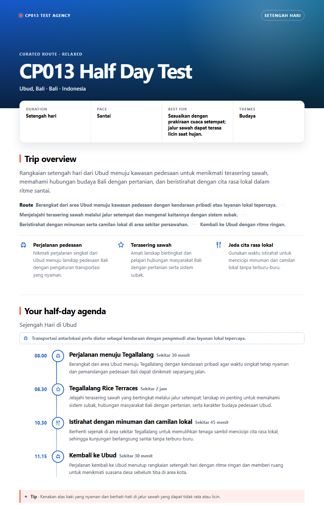
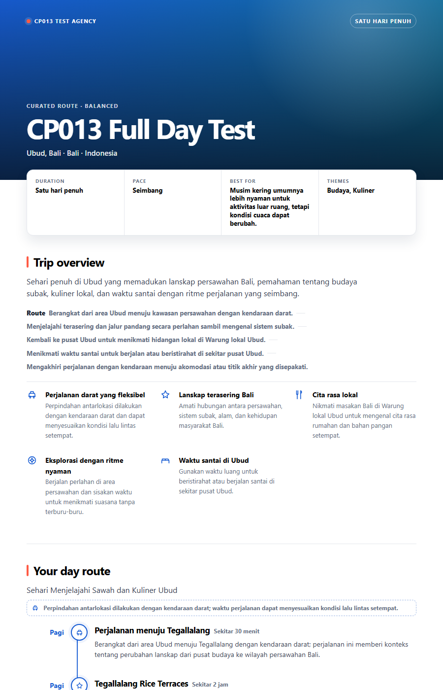
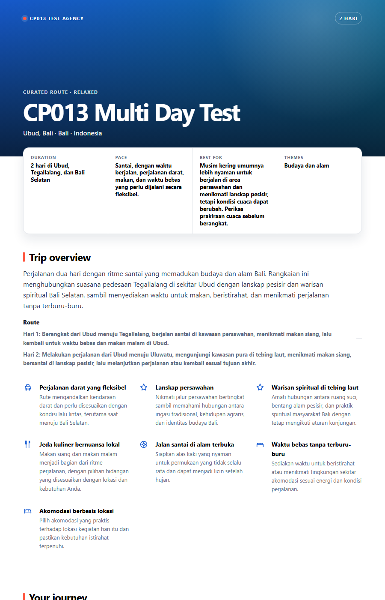
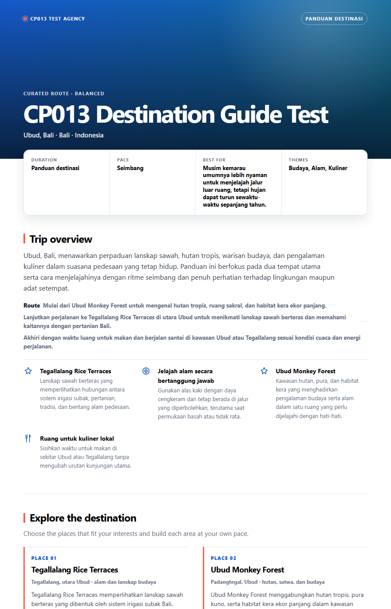

A digital travel brochure, assembled automatically from your short brief.
Fill in one form: destination, trip type, and guest preferences. Out comes a matched pair of brochures — an HTML page for guests to open on their phone, and a full-colour PDF — sent to the agent's email once ready. Output language is detected automatically from the brief.
What's inside
- Visit flow rendered as a vertical connected timeline (scheduled modes) or grouped spot cards (destination guide) — never a flat list that gets unreadable once there are more than a few stops
- An automatic travel-time guard — rejects a route that's physically impossible to complete in the trip's duration, with a different active-hours cap per mode
- An automated QA gate that rejects monetary values, opening-hour or ticket-price claims, star ratings, and other OTA-product-page tells before a brochure is ever considered finished
- Brochure colour palette matched automatically to destination type — beach, mountain, city, cultural, nature, desert, or mixed
- Region-level destination photography with attribution, or a themed gradient when no photo clears the confidence bar — never the wrong photo
- Trips longer than 7 days are automatically condensed into date ranges, not repeated as 14 near-identical day cards
Four modes, one form

Half-day
A short trip inside a single time block, capped at 6 active hours. Good for a gap agenda before a flight or after check-in.

Full-day
One full day, capped at 11 active hours, using realistic regional travel speeds — not highway speeds.

Multi-day
2–14 days, with an overnight accommodation note per day. Runs of similar days past day 7 are condensed automatically instead of repeated in full.

Destination guide
Ordered spot cards with no visit times. Spots are grouped by area once there are nine or more, never thinned out to hide the count.
How it works
Fill in the form
Destination, trip type, guest count, themes, and anything that must be included or avoided.
The route gets structured
A trip skeleton is built, venues are checked, and travel time is verified — all before any of it is written into final copy.
Automated QA filters the result
Output containing prices, opening-hour claims, or OTA-page tells is rejected and repaired before moving on.
HTML + PDF land in your inbox
Once it clears QA, the brochure is rendered into an HTML page and a full-colour PDF, sent to the agent's email.
What this tool doesn't do
- Doesn't show prices, quotes, or any monetary value whatsoever
- Doesn't claim opening hours or admission prices that change and could be wrong
- Doesn't add star ratings, review counts, scarcity claims, or a book-now button like an OTA product page
- Doesn't book anything — this is a guidance brochure, not a booking engine
- Never presents a photo as "this is the actual photo" of one specific spot — photography is always region-level, with attribution
FAQ
No. The QA gate rejects any output containing a monetary value or currency symbol in any form. This is a guidance brochure, not a pricing document.
No. Opening hours and ticket prices change often and are easy to get wrong, so the QA gate automatically rejects that kind of claim. The brochure directs guests to confirm details on site instead.
No. The QA gate explicitly rejects star ratings, review counts, scarcity claims, and booking buttons. This is a guidance brochure, not an OTA product page.
Photos are sourced automatically at the region/destination level, never as a claimed photo of one specific spot, and every photo used carries photographer attribution. If no photo meets the confidence threshold, the system falls back to a themed colour gradient instead of risking a wrong photo.
The pipeline runs automatically in the background after the form is submitted — the finished HTML and PDF are emailed once ready, not displayed immediately in the browser.
Try the Itinerary Brochure Engine
Free. The full self-serve form is still being finished — leave your email and you'll be notified the moment it's live.